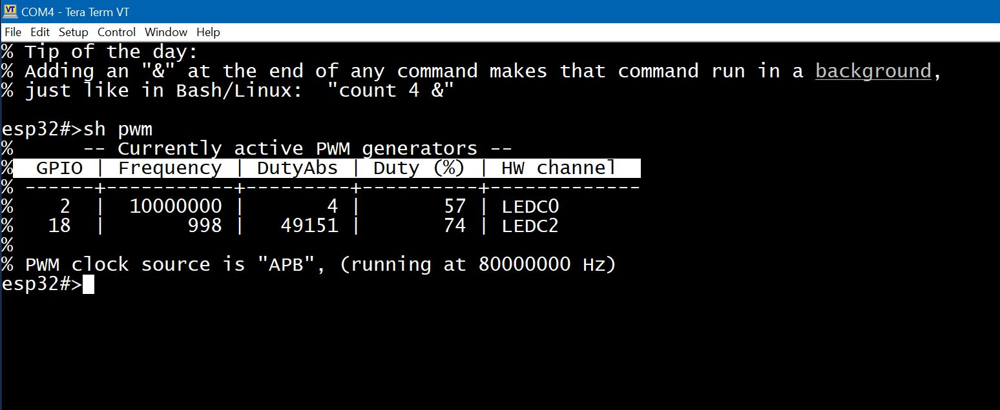

ESPShell supports generating square wave signals on any pin, with user-configurable frequency and duty cycle. The frequency can range from 1 Hz up to 10 MHz, and the duty cycle can be set from 0 (0%) to 1 (100%). The default duty cycle is 0.5 (50%). The square wave generator is based on the LEDC driver.
The minimum and maximum PWM frequencies achievable on the ESP32 depend on several factors and cannot be precisely defined here. The ESP32 can go down to 1 Hz, while the ESP32S3 has a higher minimum limit.
Although the ESP32S3 has 8 PWM channels, it only has 4 timers, meaning only 4 different frequencies can be generated simultaneously across 4 different pins. The regular ESP32 is slightly more capable, with 16 channels allowing for up to 8 unique frequencies.
There are 4 commands used for controlling PWM generation, adjusting settings, and displaying information:
The pwm command starts square wave output on the specified pin:
esp32#>pwm 2 1000
The example above starts a 1 kHz square wave on pin 2 with a 50% duty cycle. This is a non-blocking command, so it's not necessary to append "&" to run it in the background (see background execution); it runs in the background by default.
The duty cycle can be set as the third argument to the pwm command. For example, to set pin 2 to 5 kHz with a ~30% duty cycle:
esp32#>pwm 2 5000 0.3
To stop PWM output on a given pin, use the pwm command with just the pin number. For example:
esp32#>pwm 2
Setting the frequency to 0 Hz or using the keyword off also stops PWM output. These three commands are equivalent:
esp32#>pwm 2 esp32#>pwm 2 0 esp32#>pwm 2 off
An important aspect of PWM is its duty cycle resolution. Although ESPShell accepts floating-point values for the duty cycle (e.g., 0.721), the hardware has limitations: the higher the frequency, the lower the precision available. For example, at 1 kHz, the duty cycle can be set with 14-bit resolution (values from 0 to 2^14 - 1). At 10 MHz, only 3 bits are available—so a duty cycle of 0.721 might be rounded to something like 0.66.
By default, ESPShell chooses the best available resolution based on the given frequency. This behavior can be overridden using the var ledc_res command. When set to a positive number, it forces the use of the specified resolution.
Example:
esp32#>var ledc_res 8
This sets the PWM duty resolution to 8 bits. Attempting to start a 10 MHz PWM with this resolution will fail.
The ESP32 has 16, and the ESP32S3 has 8, LEDC (PWM) channels. Adjacent channels (e.g., channel 0 and 1, or 6 and 7) share the same timer, which means they cannot operate at different frequencies. Changing the frequency of one will immediately affect the other.
To avoid conflicts, ESPShell uses only **even-numbered** channels by default. This ensures that each PWM output has a unique frequency, but reduces the number of available channels (only 4 on ESP32S3 instead of 8).
In many applications, all PWM outputs share the same frequency while only the duty cycle varies. Examples include controlling multiple LED strips or multi-output power inverters.
In such cases, ESPShell can be configured to use both odd and even channels by running the command:
var pwm_ch_inc 1
You can also manually specify the hardware channel number. Usually this isn’t necessary since the shell auto-selects channels using the formula:
Next_Channel = Current_Channel + pwm_ch_inc
Example: enable 1 kHz, 50% duty PWM on pin 1 using hardware channel 2:
esp32#>pwm 1 1000 0.5 2
This changes the internal channel counter. For instance:
esp32#>pwm 2 1000 0.5 5 % PWM on pin#2, 1000 Hz (0.5% duty cycle, channel#5) is enabled % PWM channel 7 will be used next, if not explicitly specified
Channel 7 is chosen because the default pwm_ch_inc is 2. If you change it to 1:
esp32#>var pwm_ch_inc 1 esp32#>pwm 2 1000 0.5 5 % PWM on pin#2, 1000 Hz (0.5% duty cycle, channel#5) is enabled % PWM channel 6 will be used next, if not explicitly specified
Setting pwm_ch_inc to 0 will keep the current channel number unless specified manually.
To display the status and parameters of active PWM signals, use the show command:
| show pwm | Displays the current state of all PWM sources |

Fig. 2: Example output of "show pwm" command
The table shows that pin #2 is generating a 10 MHz PWM signal with ~57% duty cycle. Although it was set to 50% with pwm 2 10000000 0.5, hardware limitations restrict duty cycle resolution to just 3 bits, resulting in a coarse approximation. Pin 18 is also active, running at 1 kHz and 75% duty.
"**DutyAbs**" refers to the absolute duty cycle value, which depends on both the percentage and the resolution. Other columns include pin numbers, frequencies, and hardware channel assignments.